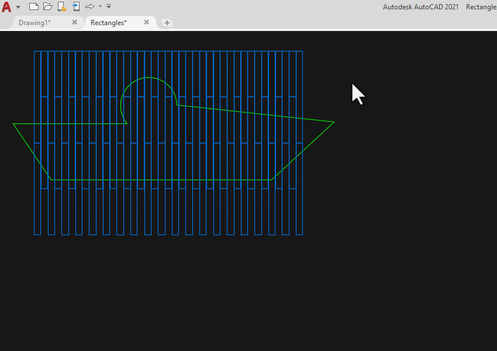

VD1: xem ảnh minh họa.
VD2: xem ảnh minh họa.

VD3: Để cắt vùng trong (thiết lập biến hệ thống SYS_CUTTINGPLINES = 1).
Đảm bảo vùng cắt và vùng chọn đều là các POLYLINES kín, nếu đó là Circle, Region, Spline.. (hãy convert sang Polyline).
Xem thêm video DEMO.